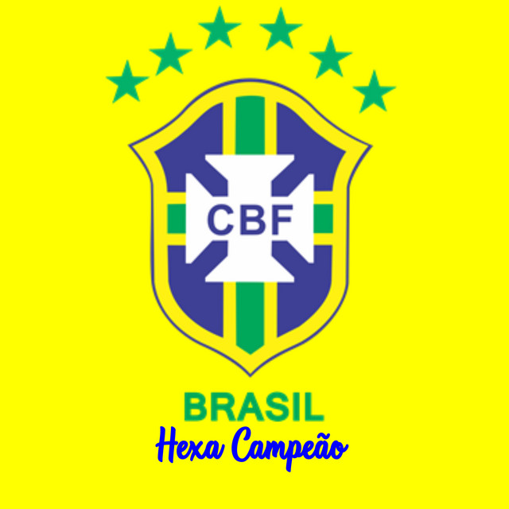

A Copa do Mundo de 2026 será realizada nos Estados Unidos, Canadá e México, marcando a primeira edição do torneio com 48 seleções participantes. O Brasil chega como uma das equipes mais tradicionais da competição, buscando conquistar seu sexto título mundial.
A Seleção Brasileira é a única que participou de todas as edições da Copa do Mundo desde 1930. Com uma história repleta de conquistas e grandes jogadores, o Brasil mantém sua posição entre os favoritos em qualquer edição do torneio.
Para a Copa de 2026, o Brasil conta com uma nova geração de talentos que mistura juventude e experiência. A expectativa dos torcedores é ver uma equipe competitiva, capaz de enfrentar as principais seleções do mundo.
O Brasil possui cinco títulos mundiais conquistados em 1958, 1962, 1970, 1994 e 2002. Esse histórico faz da seleção brasileira a maior vencedora da história da Copa do Mundo.
A classificação para a Copa de 2026 acontece por meio das Eliminatórias Sul-Americanas. A Seleção Brasileira disputa vagas contra outras equipes tradicionais do continente em busca de garantir sua presença no torneio.
Grandes nomes como Pelé, Romário, Ronaldo, Rivaldo, Ronaldinho Gaúcho e Kaká ajudaram a construir a história do Brasil nas Copas do Mundo. Suas atuações ficaram marcadas na memória dos torcedores.
A edição de 2026 promete estádios modernos, tecnologia avançada e uma experiência inédita para os fãs. Com mais seleções participantes, o torneio terá ainda mais jogos e oportunidades para grandes confrontos.
Os torcedores brasileiros acompanham a preparação da seleção com grande expectativa. O objetivo é voltar ao topo do futebol mundial e conquistar o tão sonhado hexacampeonato na Copa do Mundo de 2026.

Muito Obrigado por acessar nosso site, esperamos que tenha gostado das informações sobre a Copa do Mundo de 2026 e a Seleção Brasileira. Fique ligado para mais novidades e atualizações sobre o futebol mundial!